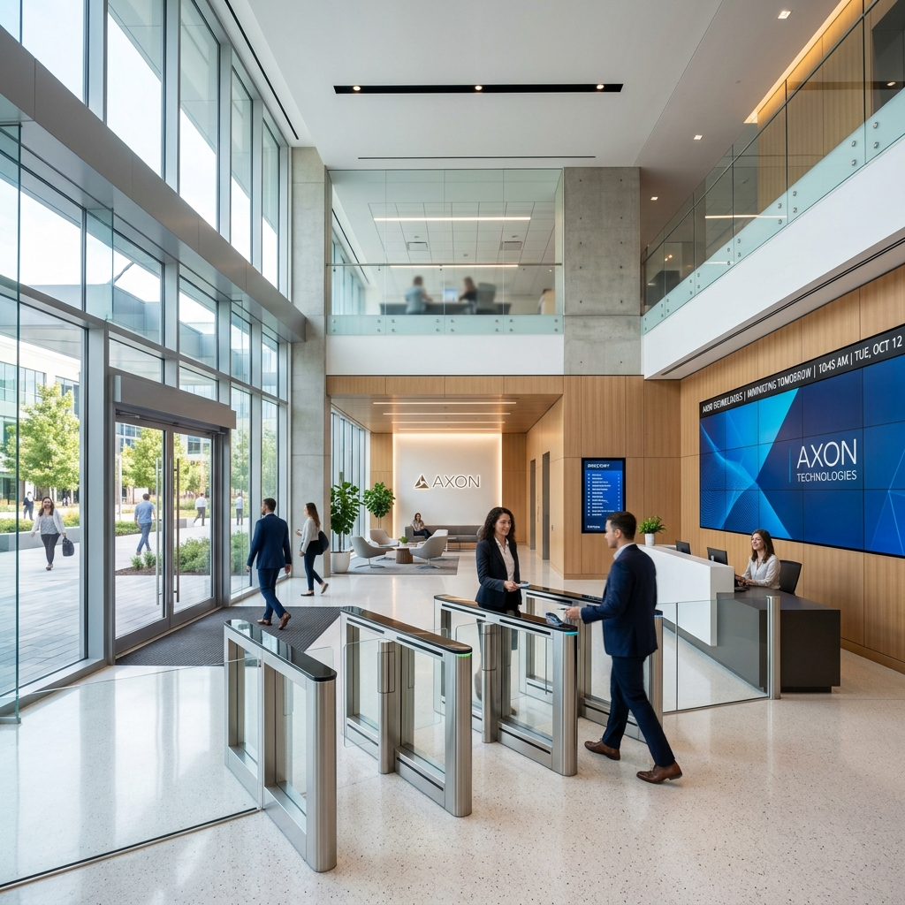

Jasa IT & Web Development Perusahaan
Layanan pengembangan teknologi informasi profesional oleh PT Tiga Jangkar Utama untuk memperkuat kredibilitas digital dan efisiensi alur bisnis perusahaan rekanan.
Mengapa Memilih Layanan IT PT Tiga Jangkar Utama?
Pengembangan sistem digital yang dirancang khusus (tailor-made) untuk mendukung efisiensi operasional dan citra bisnis modern Anda.
Aplikasi Kustom Menurut Alur Bisnis
Sistem perangkat lunak dibangun khusus menyesuaikan proses bisnis nyata perusahaan rekanan tanpa keterbatasan template.
Tampilan UI/UX Responsif & Modern
Desain visual antarmuka kelas dunia yang nyaman dibuka di smartphone, tablet, maupun layar desktop monitor.
Keamanan Data & Pemeliharaan Berkala
Perlindungan keamanan data sistem, optimasi SEO Google, serta jaminan bantuan teknis pasca rilis aplikasi secara konsisten.
Cakupan Layanan IT & Web Development
Layanan teknologi informasi terpadu mulai dari pembuatan website company profile hingga pengembangan perangkat lunak manajemen.
Website Company Profile Modern & SEO Ready
Pembuatan website perusahaan kredibel dengan kecepatan akses tinggi, animasi responsif, dan struktur ramah mesin pencari Google.
Custom Web Application (ERP, CRM, Dashboard)
Pengembangan sistem manajemen internal perusahaan untuk inventaris, absensi karyawan, pengadaan barang, dan laporan keuangan.
Perancangan UI/UX Design & Prototyping
Riset tata letak pengguna dan perancangan prototype interaktif sebelum proses pengembangan sistem dimulai.
Maintenance, Cloud Server & Technical Support
Pemeliharaan server berkala, pencadangan basis data otomatis, dan tim support yang siap membantu perbaikan kendala teknis.
Dokumentasi Tim IT & Web Development
Foto kolaborasi tim pengembang teknologi informasi PT Tiga Jangkar Utama.
